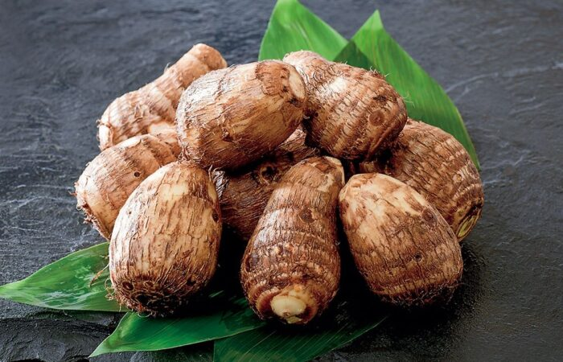
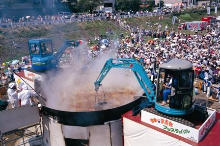
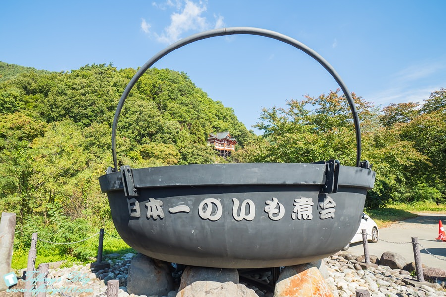

芋煮
いもにかい\SATOIMO
芋煮介紹
 芋煮，或稱芋煮會（いもにかい／IMONIKAI），是日本盛產里芋的東北地區（除了青森縣，青森縣產山藥，鍋以魚貝類為主。）的季節性活動之一。秋天時，人們聚在河邊的空地或是野外地區，利用里芋（サトイモ／SATOIMO）做火鍋料理，也常常同時有烤肉活動；不論是家族間、親友、學校、職場甚至是地區，都常常藉由芋煮會進行敦親睦鄰，讓彼此間的關係更親密。 尤其山形縣跟宮城縣更是會盛大舉辦里芋派對，山形的日本第一芋煮會甚至會出動怪手來舉辦芋煮，非常熱鬧，正是所謂「秋的風物詩」。 (日本的里芋不同於台灣的紫色且富香氣的芋頭印象，有人稱為小芋頭，顏色是米白色，口感偏向山藥的黏稠感。)
芋煮的由來

也有一說是里芋收成時正值晚秋，剛好是稻米收穫的時節，人們便聚集起來開了芋煮會慶祝稻米的豐收，成為農閒時期人們的娛樂活動。
芋煮的多元性
大致分為醬油派與味噌派，早期搭配以雞肉或是馬肉作為蛋白質來源，不可或缺的材料還有蒟蒻與大蔥，蘿蔔、豆皮、菇類與牛蒡也是芋煮的常見材料，隨著地區不同也有不同的口味與搭配食材。
山形芋頭鍋加的是牛肉、大蔥、菇類、蒟蒻等，利用濃口醬油跟清酒調味，吃起來有點像壽喜燒!!
美食推薦
山形縣一年一度的芋煮會

山形秋季風物—芋煮。毎年一到秋天，當地人就會在河岸舉辦「芋煮會」，熱鬧無比。「日本第一芋煮節」毎年9月在山形市舉辦，6公尺的大鍋能烹煮3萬人份的芋煮，分給眾多來場者享用。當天使用的芋頭量高達3公噸，必須使用大型重機烹調等，不論美味或規模都傲視全日本。
所謂芋煮，調味及使用肉類隨地區不同。山形市使用牛肉並以醬油調味，活動中提供的芋煮也是相同口味。
在戶外與眾人一起品嚐芋煮，特別好吃。以大鍋烹調的芋煮發完為止，建議各位儘早去拿號碼牌。
總結
 芋煮大會每年僅九月舉辦一次，想參加並不容易。還好山形縣提供遊客預約芋煮DIY活動，只要事先預約，也可以自己在河邊煮芋頭餐。 料理過程還算簡單，現場工作人員會幫遊客準備好柴火爐、大鍋與食材，人到現場之後只要依序放入食材最後再調味就可以吃，是非常輕鬆有趣的活動， 芋煮可謂是山形縣品嘗的美食之一。